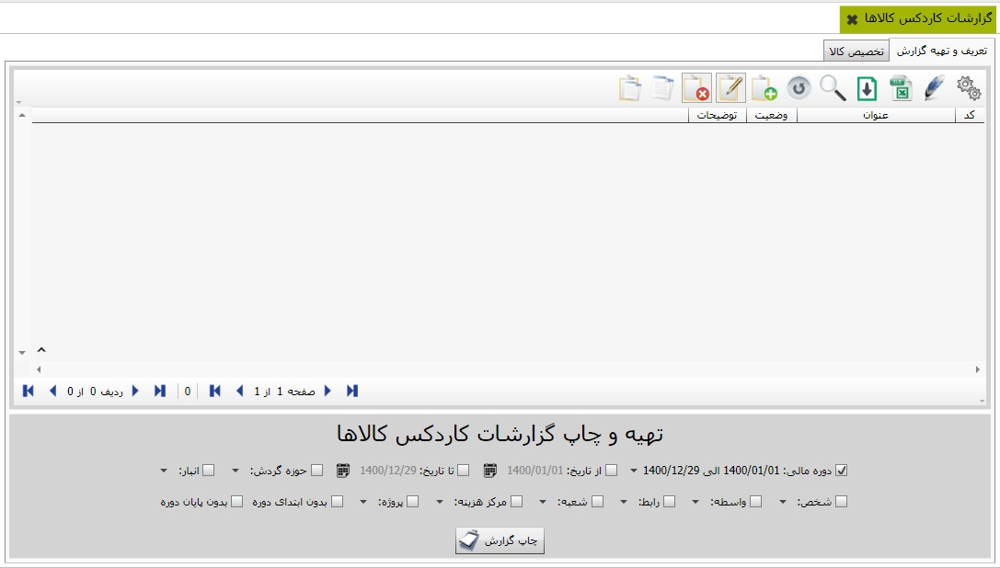
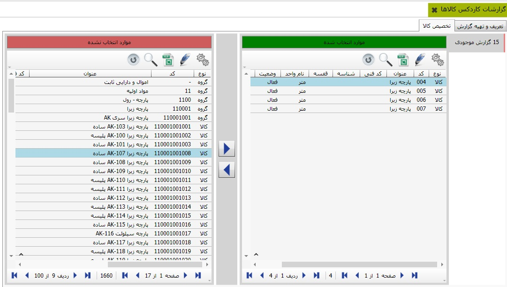
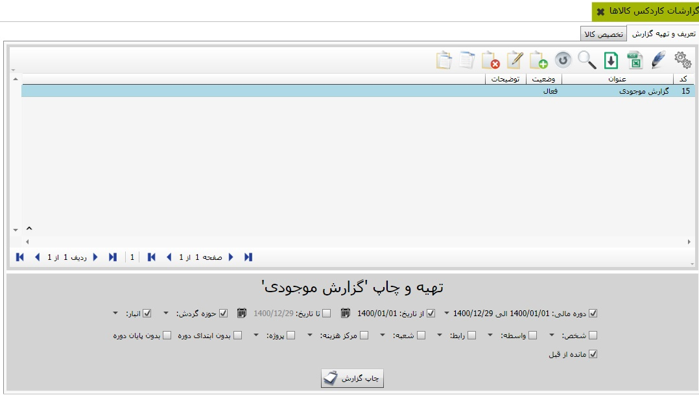

برای مشاهده کاردکس کالاها از منوی اصلی نرم افزار «گزارشات کاردکس کالاها» را کلیک کنید. در تصویر زیر، امکان تعریف گزارش موردنظر شما فراهم گردیده است. با کلیک آیکن اضافه و یا دکمه میانبر F8 می توانید گزارش ماتریسی خود را تعریف نمایید.
علاوه بر آن امکان تخصیص کالاها به گزارش تعریف شده فراهم گردیده است. برای این منظور از طریق تب تخصیص کالا امکان پذیر می باشد همانگونه که در تصویر زیر، مشاهده می کنید. لطفا کالاهای مورد نظرتان را از طریق دکمه های میانی به گزارش تخصیص دهید.
در تصویر ذیل امکان مشاهده گزارشات بر اساس گزارش تخصیص یافته کالاها مهیا شده است. شما می توانید با کلیک دکمه«چاپ گزارش» تنظیمات طراحی گزارش، پیش نمایش و چاپ آن را اعمال نمایید.
